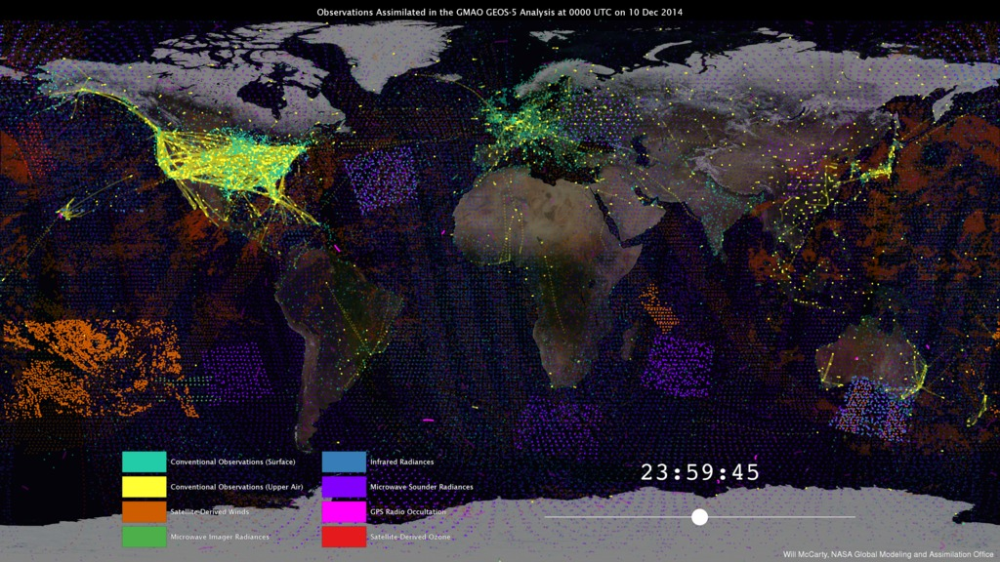

Success Stories Read about how scientists are using NCCS supercomputing

Supercomputer Upgrades to Give Scientists Ability to Improve Forecasting
The Discover supercomputer got an upgrade that will allow NASA Earth scientists to increase the resolution and capabilities of their models for more accurate predictions.

Counting Trees and Shrubs in the Sub-Sahara Using Cloud Computing—Part 1
Leveraging NASA Center for Climate Simulation and commercial cloud technologies, scientists are calculating vegetation biomass and stored carbon within a coast-to-coast swath of Africa.
Virtual Earth Observing: Simulating the Globe in 1-Mile Segments
NASA Goddard Space Flight Center scientists recently completed the highest-resolution global weather simulation ever run in the U.S. at the NASA Center for Climate Simulation.

New Animation shows Millions of Earth Observations for Forecasting
More than 5 million observations accumulate every 6 hours to drive weather forecasts run by NASA's Global Modeling and Assimilation Office at the NASA Center for Climate Simulation (NCCS).